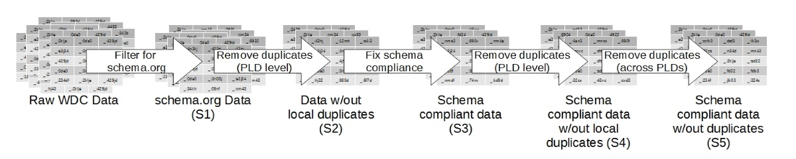

More and more websites have started to embed structured data describing products, people, organizations, places, events into their HTML pages using markup standards such as RDFa, Microdata and Microformats.
The Web Data Commons project extracts this data from several billion web pages. The project provides the extracted data for download and publishes statistics about the deployment of the different formats.
Similar to other datasets retrieved from the Web, RDF datasets retrieved from such markup include duplicates, and based on the nature of the Web the compliance to given schemas is not always given.
For futher details about the statistical distribution of both issue types as well as some indications about the reason for their occurence have a look in the following papers:
- Robert Meusel, Christian Bizer, Heiko Paulheim: A Web-scale Study of the Adoption and Evolution of the schema.org Vocabulary over Time. 5th International Conference on Web Intelligence, Mining and Semantics (WIMS2015), Limassol, Cyprus, July 2015.
- Robert Meusel and Heiko Paulheim: Heuristics for Fixing Common Errors in Deployed schema.org Microdata,Proceedings of the 12th Extended Semantic Web Conference (ESWC 2015), Portoroz, Slovenia, May 2015.
- Robert Meusel, Dominique Ritze, Heiko Paulheim: Towards More Accurately Statistical Profiling of Deployed schema.org Microdata, submitted revised Version in 2016 to the Journal of Data and Information Quality (JDIQ)
Contents
1. Data Cleansing
In order to overcome the two major issues which could be identified within RDF data retrieved from markup with HTML we propose a simple but effective pipeline to clean the data and improve the data quality.
- In a first step, syntactical duplicates (whenever two RDF-graph representations of two entities are identical) are removed within each website (PLD).
- In a second step using a set or heuristics, the most common schema violations are fixed. This will, under circumstances introduce new classes for various websites and therefore has an effect on the over profile of this particular website.
- In a third step, the duplicates within the whole data corpus are removed. This results in a more accurate statistical profile of the data corpus.
2. Source Code
The code in order to perform the described methods step by step can be found in the SVN of the WebDataCommons project: Data Cleaner.
The project can be compiled using Maven and can be execute via command-line-interface.
Master -sort FileFolder OutputFolder FILTERSTRING NumberOfThreadssorts the quads within the input files based on their webpageMaster -plddedup FileFolder OutputFolder FIXRDF NumberOfThreadsremoves syntactical duplicates within a site.Master -correct FileFolder OutputFolder ClassPropertyFile DataTypePropertyFile ObjectPropertyFile DomainViolationFixFile RangeVioloationFixFile NumberOfThreadscorrects schema violations. The necessary files for schema.org Version 1.91 are part of the project.Master -dedup FileFolder OutputFolder NumberOfThreadsremoves syntactical duplicates within the whole corpus.
3. Data
We have already applied the described methodology to the WDC 2014 Microdata Corpus, filtering for only schema.org related quads. This data was also used in order to perform the experiments described in Robert Meusel, Dominique Ritze, Heiko Paulheim: Towards More Accurately Statistical Profiling of Deployed schema.org Microdata (submitted to JDIQ). We therefore stick to the nomenclature (S1 to S5) of the different intermediate coropra used in this publication, which is visualed also in the following diagramm:
The data of the different steps within the process are provided for download as N-Quads. The data generated in each step is provided indifferent files, which are compressed using GZIP and are not larger than 100MB each.
The files of one step can be downloaded using wget with e.g. the command wget -i http://webdatacommons.org/structureddata/2014-12/files/md-schemaorg-cleaned-s1.list to download all files for S1. The file lists, containing quads for a specific steps can be found in the table below, together with more detailed statistics about sizes.
| Step | Total File Size | File List |
|---|---|---|
| S1 | 193 GB | md-schemaorg-cleaned-s1.list |
| S2 | 112 GB | md-schemaorg-cleaned-s2.list |
| S3 | 116 GB | md-schemaorg-cleaned-s3.list |
| S4 | 115 GB | md-schemaorg-cleaned-s4.list |
| S5 | 110 GB | md-schemaorg-cleaned-s5.list |
4. Further References
- Robert Meusel, Petar Petrovski, Christian Bizer: The WebDataCommons Microdata, RDFa and Microformat Dataset Series. In Proceedings of the 13th International Semantic Web Conference: Replication, Benchmark, Data and Software Track (ISWC2014).
- Christian Bizer, Kai Eckert, Robert Meusel, Hannes Mühleisen, Michael Schuhmacher, and Johanna Völker: Deployment of RDFa, Microdata, and Microformats on the Web - A Quantitative Analysis. In Proceedings of the 12th International Semantic Web Conference, Part II: In-Use Track, pp.17-32 (ISWC2013).
- Hannes Mühleisen, Christian Bizer: Web Data Commons - Extracting Structured Data from Two Large Web Corpora. In Proceedings of the WWW2012 Workshop on Linked Data on the Web (LDOW2012).
- Peter Mika, Tim Potter: Metadata Statistics for a Large Web Corpus. In Proceedings of the WWW2012 Workshop on Linked Data on the Web (LDOW2012).
- Peter Mika: Microformats and RDFa deployment across the Web. Blog Post.
- Class Statistics from the Sindice data search engine.